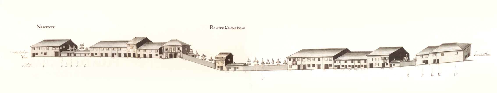
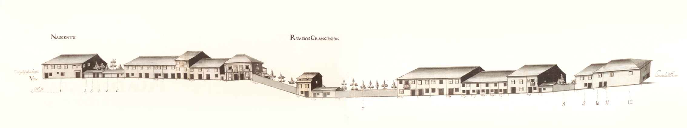

35 Rua de S. Marcos
Envolvia muralha, do lado Este, e ligava o exterior da Porta do Souto ao campo dos Remédios .
Aberta no tempo de D. Diogo de Sousa rapidamente se encheu de casas no alçado Nascente; o Cabido , que aqui tem aforada apenas uma casa e o convento dos Remédios , era já senhor de um prazo em 1515 . O lado Poente, que encostava à muralha, não tinha nenhuma edificação em 1594 , segundo o mapa de Braunio.
Esta rua, onde existe o último exemplar completo de casa com gelosias, tão vulgar nas artérias principais de Braga em 1750 , não está representada no Mappa porque pertencia à Câmara . E é pena porque, para além da imagem que nos transmitiria, nos poderia dar muitos elementos que agora só documentalmente poderemos obter. Uma última informação fica: no último quartel do séc. XIX agrupavam-se aqui as principais oficinas de escultores santeiros da cidade. Seria também assim no séc. XVIII?
Mantém ainda hoje o mesmo nome.
Mandada abrir por D. Diogo de Sousa em terreno acidentado, estabelecia uma ligação rápida entre a porta de S. João e a rua da Ponte de Guimarães . Aquele arcebispo instalou também aqui uma fonte em 1509 .
Aberta em plena zona rural, de certo modo nas traseiras do hospital de S. Marcos , esta artéria mostra muitas casas do tipo de porta ladeada de janela, no piso térreo. Uma única habitação aparece aqui bem cuidada, com «molduras» em pedra nas portas e janelas: todas as outras, são simples e de pedra – excepto a do prazo nº 1 - mais ou menos bem tratadas, avultando 3 com varandas.
De salientar ainda que quase todas as janelas são do tipo bracarense.
Tendo no Mappa apenas desenhado o seu lado Nascente, tinha então 32 casas, 9 das quais eram prazos do Cabido .
A rua dos Granjinhos corresponde hoje à metade Sul das ruas de S. Lázaro e dos Granjinhos .
Casas
1 António de Araújo Ferreira, alfaiate 70 reis Confronta, do norte, com casa foreira à capela de Sta. Luzia , ou morgado de Besteiros , e, do sul, com o nº 2 ( Convento dos Remédios ). Foi construída, juntamente com os nº 2, 3 e 4, depois do ano de 1515 , no local onde existia uma vinha.
2, 3 e 4 Através de um contrato de escambo, realizado no ano de 1544 , o cabido cedeu a D. André de Torquemada, Bispo de Dume , parte dos terrenos das casas existentes neste local, a fim de se erirgir o convento de Nossa Senhora dos Remédios . A portaria deste convento foi, assim, construída em parte daqueles quintais. Posteriormente, no ano de 1734 , o cabido escambou as casas, que foram demolidas, sendo o terreno integrado no referido convento. Todas as casas estavam incorporadas no nº 1, da qual se separaram através de escrituras de prazo realizadas em 1630 , 1642 e 1714 , referentes às casas nº 4, 3 e 2, respectivamente.
1 Manuel Fernandes da Silva, mestre de pedraria 480 reis e 4 galinhas Faziam parte do prazo as vertentes das águas do Hospital de S. Marcos . Os de nº 1 a 6 foram construídos em 1508 , no local onde existia uma vinha. No meio dos quintais das casas nº 1 e 2 encontra-se um caminho de serventia de «terra encapelada», ou seja, com encargo de missas em Nossa Senhora a Branca e em S. João do Souto . O nº 1 confronta, do norte, com a cangosta da Palmatória .
2 e 3 Manuel Fernandes da Silva, mestre de pedraria 40 reis
4, 5 e 6 Manuel Fernandes da Silva, mestre de pedraria 150 reis e 1 galinha O nº 6 confronta, do sul, com casa de herdade dízima a Deus.
7 Os herdeiros de João Marques, da Rua de S. Marcos, casado com Catarina de Araújo 160 reis e 2 galinhas Leiras situadas nas hortas dos Granginhos , abaixo da Fonte do Ídolo , e nas Hortas de S. Marcos , atrás da Fonte de S. Marcos .
8 Quintal da casa nº 25 da Rua de S. Lázaro .
9 e 10 Pedro Gomes de Basto, c.c. Maria de Magalhães O Padre António Ferreira Torres paga de foro, 202 reis ao nº 42 da Rua de S. Lázaro .
11 Pedro Gomes de Basto, c.c. Maria de Magalhães Mariana Dias, viúva paga 305 reis ao nº 42 da Rua de S. Lázaro .
12 Pedro Gomes de Basto, c.c. Maria de Magalhães O Padre José Ferreira, vigário de Covas , paga 100 reis, ao nº 42 da Rua de S. Lázaro . Confronta, do sul, com o terreiro de S. Lázaro e, do poente, com a Rua dos Granginhos .
Visão original
 
 Visão atual